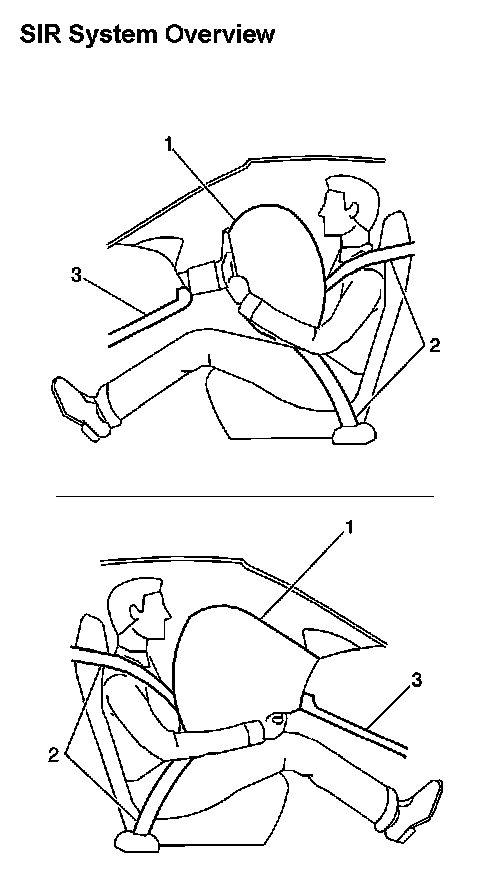

SIR System Overview
SIR SYSTEM DESCRIPTION AND OPERATION
SIR SYSTEM OVERVIEW

The Supplemental Inflatable Restraint (SIR) System supplements the protection offered by the occupants Seat Belt System (2). The SIR system may contain several inflator modules located throughout the vehicle, i.e. steering wheel module (1) and instrument panel (I/P) module (1). In addition to inflator modules, the vehicle contains an inflatable restraint Passenger Presence System (PPS) that measures the weight of an occupant sitting in the front passenger seat. The PPS uses the weight of the occupant to determine if the I/P inflator module will be enabled or disabled. Each inflator module has a deployment loop that is controlled by the sensing and diagnostic module (SDM) mounted inside the vehicle. The SDM determines the severity of a collision with the assistance of various sensor inputs. When the SDM detects a collision of sufficient force it will process the information provided by the sensors to further support air bag deployment. The SDM performs continuous diagnostic monitoring of the SIR system electrical components. Upon detection of a circuit malfunction, the SDM will set a DTC and inform the driver by requesting the instrument panel cluster (IPC) to turn the AIR BAG indicator ON. The steering column (1) and knee bolsters (3) are designed to absorb energy and compress during frontal collisions in order to limit leg movement and decrease the chance of injury to the driver and passenger.